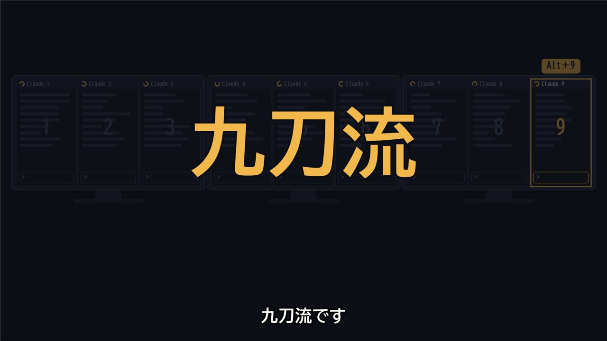

皆さん、お世話になっております。プログラミング教室、教室長の彦阪です。
最近、AIを使って動画を作っています。今回は、その中で自分でも驚いた変化について書いてみます。
ただ見ていた動画に、問いが立つようになった
これまでは、SNSやYouTubeで流れてくる動画を見ても、内容しか見ていませんでした。 これは何で作っているんだろう、と考えるための知識がなかったのです。
ところが、自分でAI動画を作るようになってから、同じ動画を見ても頭の中に次々と質問が浮かぶようになりました。
- この映像は、どのAI動画生成ソフトで作っているんだろう
- この声は本人のナレーションか、それとも音声合成か。だとしたら、どれを使っているのか
- 動画編集は、どうやってつないでいるのか
こうした問いが浮かぶのは、自分も同じところで手を動かしているからです。参考までに、私の今の作り方はこうです。
- 全体の作業：Claude Code（AIに指示を出して、作業を進めてもらう道具）
- 動画の生成：Grok（Grok Imagine）
- 画像の生成：Gemini
- 動画の編集：CapCut。手で操作するのではなく、CapCutをPythonから動かせるライブラリ（pyCapCut）を使い、Claude Codeから編集データを組み立てています
つまり、編集作業そのものもプログラミングで動かしているわけです。

見ているものは前と同じです。変わったのは、自分の側の「見る目」でした。 自分の手で一度作ってみると、作り手がどこで工夫し、どこで苦労しているのかが分かります。だから、アンテナが立つのです。
ツールを使いこなすと、質問が変わる
これは動画に限った話ではないと思います。 道具を使いこなせるようになると、質問が変わります。 「すごいなあ」で止まっていたところに、「どうやって作ったんだろう」「自分ならどう作るか」という問いが生まれる。 質問が変われば、見えるものが変わり、集まってくる情報も変わります。
私はこれを、使う側から作る側への視座の転換だと考えています。 同じ景色を見ていても、作る側に立った人には、その裏側の仕組みが見えてくるのです。
自分の見る目が変わると、周りの見る目も変わる
視座の転換が起きると、変わるのは自分の見る目だけではありません。周りが自分を見る目も変わってきます。
「この人は技術が分かっているな」「よく勉強しているな」と思ってもらえると、情報がどんどん集まってくるようになり、仕事にもつながります。 子どもであれば、先生や友だちが高く評価してくれるようになるでしょう。 評価されると、また新しいことに挑戦したくなる。そうして好循環が生まれます。
始まりは、ひとつの道具を使ってみた、という小さなきっかけかもしれません。 それでも、そうやってチャンスをどんどん掴んでいくためには、自分の持っている手は、多ければ多いほどいいと私は考えています。
脳は、使えば使うほど強くなる
脳は使わないと衰え、使えば使うほど強く、たくましくなっていきます。これは気合いの話ではなく、研究でも示されています。
ロンドンのタクシー運転手の脳を調べた研究では、運転手として道を覚えてきた年数が長い人ほど、記憶や空間の把握に関わる「海馬」の後ろ側が大きいことが分かりました（Maguire ほか, 2000）。
また、ジャグリングを3か月練習した人の脳では、動きを捉える領域の灰白質が増え、練習をやめると元に近づいていったという研究もあります（Draganski ほか, 2004）。 使えば育ち、使わなければしぼむ。脳は、使い方に合わせて形を変えているのです。
新しい道具を覚え、作ってみて、問いが立つ。この繰り返しそのものが、脳にとっての筋トレなのだと思います。
子どもたちにも「作る側」の目を
今の子どもたちは、生まれたときから動画やゲームに囲まれています。でも、その多くは「使う側」「見る側」としての関わりです。
プログラミング教室で、ゲームやアニメーションを自分の手で作ってみると、子どもたちの見る目も変わります。 ふだん遊んでいるゲームを見て「これ、どうやって動かしてるんだろう」と言い出す。 その一言が、使う側から作る側へ視座が変わった瞬間です。
私自身、大人になった今でも、新しい道具を使うたびに見える世界が広がっています。 子どもたちにも、その「見える世界が変わる」感覚を、教室でたくさん味わってほしいと考えています。
これからも、一人ひとりと向き合いながら教室を運営してまいります。
出典・参考
- Maguire, E. A. ほか (2000) "Navigation-related structural change in the hippocampi of taxi drivers." Proceedings of the National Academy of Sciences, 97(8), 4398–4403.（論文ページ）
- Draganski, B. ほか (2004) "Neuroplasticity: Changes in grey matter induced by training." Nature, 427, 311–312.（論文ページ）
- いずれも大人を対象とした研究です。脳の変化と、記事中の「見る目が変わる」という私自身の体験とを直接結びつけて確かめたものではありません。